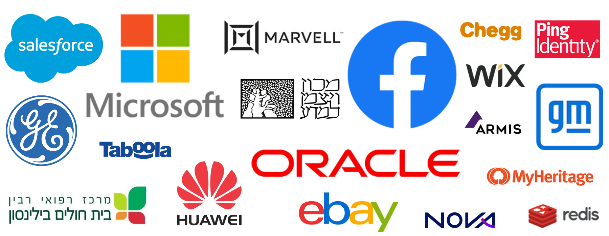

פורסם בתאריך 15.1.2021
התכנים בפוסט זה, כמו כל שאר התכנים בבלוג, הינם תכנים לימודיים במהותם, הם אינם מהווים ייעוץ או המלצה לביצוע פעולה בנייר ערך, ואין לראות בהם תחליף לייעוץ השקעות ו/או ייעוץ פנסיוני המתחשב בצרכיו הייחודיים של כל אדם.
שנת 2020 היתה שנה מורכבת ומאתגרת לכולם. אין צורך להכביר במילים על הקורונה, על השינויים שהכניסה לחיינו (בעיקר לרעה, אבל חלקם גם לטובה כמו תהליך דיגיטציה מואץ שעובר העולם), על התחלואה והתמותה שגרמה, על הפגיעה הכלכלית ברבים, בעיקר בעצמאים קטנים, ועל החששות וחוסר הוודאות שהגיעו בעקבותיה.
מבחינה אישית השנה הזו היתה מורכבת מאוד גם עבורי. השנה היוותה עבורי שילוב של אושר וסיפוק מצד אחד עם עצב ואובדן מצד שני. בפוסט הזה אשתף את אשר עבר עליי השנה הן מבחינה אישית והן מבחינה מקצועית, על התובנות שלמדתי בעולם ההשקעות הפאסיביות, ובכלל, ועל התכנונים לשנה האזרחית החדשה.
שנת 2020 מבחינה אישית ומשפחתית
לצערי הרב, חודשיים בדיוק לסוף השנה, ב-31 לאוקטובר, הלכה לעולמה אימי האהובה, זיוה, לאחר מאבק ממושך במחלת הסרטן, כשהיא בת 62 בלבד. בלתי אפשרי לתאר במילים את כל המאמץ, התמיכה, הדאגה והנתינה של אמא לי ולאחיי, לנכדים, וגם לאחיינים ולסבא וסבתא לאורך השנים. הכל באהבה גדולה, ובתכנון וחשיבה מראש עד לפרטים הקטנים ביותר. אפילו בחודשים האחרונים לחייה היה חשוב לה לקנות ספרים, חוברות עבודה וצעצועים לבן הבכור שלי, עידן, בקניון של איכילוב אחרי טיפולים שעברה.
אמא היתה חלק מרכזי בעיצוב האישיות והערכים שלי – ערכים של נתינה, אהבה, מסירות, מקצועיות וירידה לפרטים, שאני משתדל ליישם בחיי האישיים והמקצועיים כל העת. גם מבחינה פיננסית, אמא לימדה אותי ואת אחיי על החשיבות של התנהלות כלכלית שקולה ומודעת – שמצד אחד כוללת נתינה ברוחב לב, אבל מצד שני כוללת בחינה של הערך מול העלות, השוואת מחירים, וחיסכון. את הפן של השקעת החסכונות פחות הכירה, ואני שמח שיכולתי לסייע בפן הזה לכל המשפחה.
לצד הצער על לכתה של אמא, שמחנו מאוד על הצטרפותה של ליה הקטנה למשפחה, שנולדה בדיוק ב-4th of July! בדקתי, זה לא מזכה אותה באזרחות אמריקאית 😊. אבל היי, בלי אזרחות אמריקאית לא תהיה לה בעיה להשקיע בקרנות איריות! (אם זה נשמע לכם כמו סינית – תקראו כאן). לכל הפחות אמא זכתה לראות את ליה ולהחזיק אותה בזרועותיה, ולו לזמן קצר, וגם זו נחמה קטנה.
שנת 2020 מבחינת העשייה ב-Simplifynance
שנת 2020 הפכה להיות שנת הצמיחה והגדילה המשמעותית של Simplifynance. החברה הכניסה רוח רעננה וחדשנית לעולם ההדרכות והתכנון הפיננסי בישראל, עם דגש על מוצרים פאסיביים מחקי מדד זולים ויעילים, והסתכלות רחבה על כל החסכונות שלנו כ"תיק השקעות אחד". בתחומים אלו אוכל לציין בגאווה כי אנחנו החברה המובילה והאיכותית בישראל, ובפער ניכר, כפי שמשתקף מכמות הבוגרים שלנו, ומהפידבקים המעולים שאנחנו מקבלים שוב ושוב, על כך שגרמנו לשינוי משמעותי בחייהם של אנשים ומשקי בית רבים.
במהלך השנה זכינו להכרה ולהישגים רבים – ככה זה כשמספקים מוצרים (בעיקר קורסים) ושירותים (תכנון פיננסי, הדרכות, הרצאות, ליווי להשקעות פאסיביות ועוד) באיכות הגבוהה ביותר, וברמת ירידה לפרטים שאין שניה לה. בין היתר נזכיר את הנושאים הבאים:
1. בחודש מרץ עלה לאוויר הקורס הדיגיטלי שלנו, אחרי 11 מחזורים פרונטליים.
2. חצינו את הרף המרשים של יותר מ-1,000 בוגרים בסוף הרבעון השלישי. נכון לכתיבת שורות אלה, מס' הבוגרים שלנו עומד על 1,250, מתוכם 80 משקי בית שעברו אצלנו תכנון פיננסי אישי.
3. הפכנו לקונצנזוס בעולם ההייטק הישראלי:

3.1. העברנו שני קורסים מקיפים בחברת מיקרוסופט – אחד מהם פרונטלי טרום הקורונה במשרדים בחיפה, ואחד מהם בזום לכמה מאות מעובדי החברה בחודש יוני. החברה מארגנת העשרות לעובדים הנקראות Out of Scope, והקורס שלנו היה היחיד שרץ בשני מחזורים, ובעל כמות המשתתפים הגבוהה ביותר, בעקבות הביקוש המטורף.

3.2. העברנו קורס מקיף בזום ממש לאחרונה לעשרות עובדי חברת מארוול.
3.3. התארגנות פנימית של עשרות מעובדי פייסבוק ישראל הביאה לקבוצת רכישה לקורס החירות הפיננסית.
3.4. התארגנות דומה חלה לאחרונה גם בקרב עובדי Wix.
3.5. העברנו סדרת הרצאות בחברת Armis, וכן הרצאות וסדנאות ב-Taboola, Oracle, Ariloo, Nemesis, מחלקת הדיגיטל של הראל פיננסים, ועוד.
3.6. המשכנו את ההתקשרות עם הייטקזון, בתור הקורס הפיננסי הבלעדי של מועדון הצרכנות לאנשי ההייטק.
4. הוצאנו מס' פוסטים סופר פופולריים שזכו לאלפי שיתופים, תגובות ותיוגים בבלוגים ובקבוצות פייסבוק פיננסיות. בין היתר נזכיר את הפוסטים הבאים:
ידע שווה כסף - כמה באמת נרוויח יותר בהשקעה פאסיבית עצמאית
פנסיוני - למה קופת גמל להשקעה הוא פשוט מוצר גרוע
נינג'ה פיננסית - השקעה בקרנות איריות: החלופות למשקיע הישראלי ב-2021
ידע שווה כסף - 11 הנחות יסוד שגויות של הציבור לגבי השקעה עצמאית
נינג'ה פיננסית - הגודל כן קובע אבל גם הערך חשוב
ידע שווה כסף - קייס סטאדי לתיק מנוהל: שאלון לבניית תיק אוטומטי של Videa
5. התארחנו בוובינרים ופודקאסטים מובילים:
הוובינר של רונן עם עומר אשכנזי (אג'נדה) על יתרונות ההשקעות הפאסיביות
הריאיון של רונן עם דני גדייב בפודקאסט Podcash
6. התיק הפאסיבי שלנו ממשיך להוביל בהתערבות העשור, בפער של 19.4% נכון לסוף 2020.
הרחבת הפעילות והצוות
הגדלנו משמעותית את כמות התכנונים הפיננסיים שלנו
הייחודיות שלנו בעולם התכנון הפיננסי מתבטאת במס' היבטים:
1. אנחנו שמים דגש על השקעות פאסיביות, באופן שמבוסס על נתונים ומחקרים סטטיסטיים ארוכי טווח, ולא דוחפים ללקוחות שלנו מוצרים מנוהלים יקרים.
2. אנחנו גובים עלות חד פעמית, ללא "ליווי שוטף" וללא דמי ניהול כאחוז משווי החסכונות.
3. אנחנו לא מזלזלים באינטליגנציה של הלקוחות שלנו ובטוחים (מניסיון) שכל אחד יכול להשקיע בקלות וביעילות בכוחות עצמו עם קצת (באמת קצת!) ידע והכוונה.
4. אנחנו מסתכלים על החסכונות, היעדים והמטרות בצורה רחבה ומתכננים את הקצאת ההשקעות מכל הסוגים בצורה מושכלת, מתוך מטרה למקסם את התשואות והטבות המס תוך התאמה ליעדי המשפחה.
5. אנחנו צנועים מספיק להבין שאין לנו דרך לנבא את העתיד ולנתח מגמות, אבל מצד שני המקצועיות שלנו היא חסרת פשרות ונכנסת לפרטים הכי קטנים.
כיוון שאין בנמצא כמעט בכלל מתכננים פיננסיים שפועלים בדרך זו, לקוחות רציניים רבים פונים אלינו לתכנון פיננסי כשהם סומכים על המקצועיות והיושרה שלנו. בין היתר ניתן להזכיר סמנכ"לים ומנהלים בכירים בחברות מיקרוסופט, טרה, פייסבוק, אמאזון, קימברלי-קלארק, ועוד, אנשי הייטק רבים, עורכי דין, רופאים ובעלי עסקים. אבל לא רק לקוחות "כבדים" מגיעים אלינו – גם צעירים וסטודנטים עוברים אצלנו תכנון פיננסי, מתוך הבנה שמוטב ללמוד וליישם את המתודולוגיה כבר מגיל צעיר.
נכנסנו לתחומים חדשים של תכנון פיננסי: תכנון פרישה + השקעות ומיסוי לבעלי עסקים
אנו תמיד דוגלים בחשיבה מחוץ לקופסא מתוך רצון למקסם את התשואות והטבות המס תוך עמידה ביעדים של הלקוחות שלנו, מה שפעמים רבות גורם לדרכי פעולה ששונות מהסטנדרט המקובל. בתכנון פרישה זה יכול להתבטא בהקטנה מכוונת של הקצבה, תוך העדפת חסכונות הוניים פאסיביים, זולים ורווחיים, על פני חסכונות קצבתיים, מנוהלים, יקרים ולא יעילים. קצבה ניתן לייצר גם באופן עצמאי מבלי שאף אחד ישלם לנו, ובכך ניתן גם לחיות ברמת חיים גבוהה, גם ליהנות מהטבות מס, גם להמשיך להגדיל את ההון, וגם לדאוג לירושה פטורה ממס.
בתכנון השקעות ומיסוי לבעלי עסקים אנחנו לא באים ללמד את בעל העסק איך לנהל את העסק שלו או לשווק את עצמו. אנחנו סומכים עליו שיידע לעשות את זה מצוין בעצמו. אך כן נעזור לו לחסוך עשרות אלפי שקלים כל שנה במיסוי, להשקיע ביעילות במסגרת חברה בע"מ, ולנצל את המנגנון הזה לפרישה מוקדמת, אם רק יבחר בכך.
בשני המקרים ניהלנו שיחות ששברו מיתוסים לאנשי המקצוע בתחום - הן לסוכנים פנסיוניים והן לרואי חשבון. ככה זה, כשכל המספרים מסודרים, גם המקובעים שבאנשי המקצוע משנים את דעתם ומבינים שיש כיוון אחר, יעיל יותר.
הרחבנו את הצוות
כדי לעמוד בביקוש הגדלנו את הצוות שלנו, והוא כולל כעת שלושה מתכננים פיננסיים תותחים (עבדכם הנאמן, רועי ותומר), ו-3 יועצי רישום ולימודים תותחים (אביב, ויקי ודניאל). הקו המנחה של כולנו הוא לתת ללקוח את מה שמתאים לו ואף-פעם לא "לדחוף" לו שירותים או מוצרים שאינו זקוק להם. למשל, בחור צעיר שרק התחיל את הקריירה, חוסך יפה באופן פרטי אבל אין לו כמעט חסכונות פנסיוניים אולי יסתפק בקורס מצומצם לבניית תיק השקעות פרטי, ומנגד זוג הייטקיסטים בשנות ה-40 לחייהם, עם צבירה של מיליונים בפנסיה, השתלמות ו-RSU יפיקו תועלת רבה מתכנון פיננסי הכולל תכנון מפורט לפרישה מוקדמת.
יועצי הרישום והלימודים שלנו הם בדיוק ההיפך מאנשי מכירות קלאסיים. מדובר בחבר'ה צעירים ומאוד אינטליגנטיים, כולם בוגרי הקורס שמיישמים את התובנות שלו בעצמם כבר כעת, אוהבים את התחום, ורוצים לעשות טוב לאחרים. הפונים אלינו מקבלים מהם הסבר מקיף על החלופות השונות העומדות בפניהם, כדי שיוכלו לבחור את האפשרות שהכי מתאימה עבורם לטיפול יעיל בחסכונות שלהם.
השקנו שירותים חדשים בפן היישומי: ליווי טכני להשקעות פאסיביות ולחיסכון הפנסיוני
לאחר שיחות מעמיקות וסקר שערכנו לבוגרים שלנו, הבנו שמלבד הקורסים, ההדרכות והתכנונים הפיננסיים שלנו, חלק מלקוחותינו זקוקים גם לליווי להשקעות פאסיביות, הן עבור החסכונות הפרטיים והן עבור הפנסיוניים.
לכן, השקנו בחודש יוני את שירותי התחלה קלה, הכוללים את התחלה קלה לרכישת ניירות ערך – שמטרתו ליווי של הלקוח ברכישה הראשונית של ני"ע בארץ ובחו"ל, ואת התחלה קלה לחיסכון הפנסיוני – שמטרתו לחסוך מהלקוח את כל הבירוקרטיה ביישום המתודולוגיה אותה אנו מלמדים.
מתודולוגיה זו כוללת פתיחת קה"ש וקופ"ג IRA, הצטרפות למסלולים מחקי מדד, ניוד צבירות ל-IRA, פיצול הפקדות תגמולים ופיצויים מול המעסיק, ועוד. לשם כך חברנו לסוכנים תותחים וסופר מקצועיים שגם מבינים את המתודולוגיה ויתרונותיה, וגם יודעים לעבוד במקצועיות מול הגופים והמעסיקים, שני דברים שקשה להגיד על רבים מהסוכנים.
הצגנו קצב גידול מרשים בהכנסות (שהיכה את המדדים 😊)
הגרף שלהלן מציג את קצב הגידול בהכנסות החברה מאז תחילת פעילותה כחברה נפרדת במאי 2020 (לפני כן פעלנו במסגרת חברת ייעוץ והדרכה אחרת, שסיפקה גם שירותי ייעוץ טכנולוגי). המספרים תואמים את הפידבקים שאנחנו מקבלים – כשיש הרבה לקוחות מרוצים, הם ממליצים לחברים ולבני המשפחה שלהם, שהופכים בעצמם ללקוחות מרוצים, ממליצים בעצמם, וחוזר חלילה. כל הגידול הזה הושג מלקוחות שמגיעים באופן עצמאי (אחרי שנחשפו לתכנים שלנו בבלוגים, פודקאסטים, וובינרים, הרצאות וסדנאות), ומהמלצות בוגרים. מלבד הפרסום הממומן הקבוע בהייטקזון, אנחנו לא מוציאים בכלל כסף על פרסום, כלומר הגידול שלנו רובו ככולו אורגני.
שנת 2020 בשווקים
שנת 2020 היוותה תזכורת נוספת לשני לקחים שמשקיעים פאסיביים כבר מכירים טוב מאוד:
1. אף אחד לא יודע לנבא משברים, שמגיעים תמיד באופן מפתיע.
2. אף אחד לא יודע מתי תגיע ההתאוששות מהמשבר, וכמה מהירה היא תהיה.
בתור מי שמכיר את הנתונים ההיסטוריים, לא התרגשתי מהירידות החדות בשווקים של פברואר-מרץ, החלטתי שאני לא מתכוון לבדוק את שווי האחזקות בחשבון הפרטי וחשבונות ה-IRA בכלל במשך 3 חודשים, ולהיכנס אליהם רק לצורך הרכישות החודשיות. בזמן שרבים היו בפאניקה, עברו למסלולים אג"חיים או אפילו שקליים אחרי הירידות (וקיבעו את ההפסד), אני התמקדתי בהרחבת הידע, למדתי על חלוקה לפקטורים ועל העובדה שמניות ערך קטנות-בינוניות הם Asset Classes רווחיים יותר לאורך עשרות שנים בכל פרק זמן שנבדק, והשוויתי בין הקורונה לשפעת הספרדית. השוק תיקן את עצמו לחלוטין תוך חצי שנה ואף עלה מעבר לנק' השיא בפברואר, ורבים מאלה שיצאו אחרי הירידות, נזכרו גם לחזור מאוחר מדי לשוק, אם בכלל, ובכך פיספסו גם את התיקון חזרה כלפי מעלה.
גידול במודעות ובחשיבות להשכלה פיננסית והתחרות בתחום
בשנת 2020 לפחות ארבעה מבוגרי קורס החירות הפיננסית הוציאו קורסים דיגיטליים משל עצמם על השקעות בשוק ההון והפנסיה והפכו למתחרים שלנו. מצד אחד מדובר בחדשות טובות כיוון שיותר ויותר אנשים מגלים את החשיבות הרבה של רכישת השכלה פיננסית, ומעוניינים לקחת אחריות על עתידם הכלכלי. יחד עם זאת, אנחנו מקבלים פניות רבות ממאוכזבים שסיימו קורסים וסדנאות מתחרות בתחומי ההשקעות והפנסיה, שהרגישו שקיבלו מעט מאוד ערך מהקורס/הסדנא שעברו, הן ברמת הידע והן ברמת הפרקטיקה.
הפידבק שקיבלנו מאותם מאוכזבים היה שהם סיימו קורס בסיסי מאוד, שבעיקר סקר כל מיני מושגים, בזבז להם את הזמן, והם לא יצאו עם ידע של מה כדאי לעשות ולא עם הפרקטיקה של איך כדאי לעשות זאת. רבים מאותם מאוכזבים המשיכו ולמדו אצלנו, וכשביקשנו את חוות דעתם בתום הקורס, הם אמרו שאין בכלל מה להשוות בין הערך של הקורסים. הם ציינו שהתכנים שלנו הם פשוט ליגה אחרת, ברמת העומק, הירידה לפרטים עד הניואנסים הקטנים ביותר, וההפשטה של תכנים מורכבים לתכנית פעולה פשוטה, הן בתחום ההשקעות והן בעולם הפנסיה.
כנק' למחשבה למי שמתלבט אצל מי ללמוד, נזכיר שהעובדה שמישהו פתח קבוצת פייסבוק לא הופכת אותו למומחה. כדי להחליט אצל מי ללמוד – שאלו את עצמכם את השאלות הבאות:
1. האם ראיתם/קראתם תכנים של אותו מרצה? ואם כן – האם התכנים היו בנאליים וכללו בעיקר סקירת מושגים, או שהם נכנסו לעומקם של דברים וכללו תובנות רבות וחשובות?
2. האם המרצה puts his money where his mouth is? מס' מרצים הוציאו קורס דיגיטלי על שוק ההון כי זה נושא שיחסית קל ללמד, במיוחד אחרי שלמדו אצלנו. אבל האם הם גם משקיעים בעצמם באופן פאסיבי בשקו ההון כי הם מבינים את היתרונות הגדולים בהשקעה פאסיבית במדדים, או שהם מתעדפים השקעות בתחומים אחרים? מי שרוצה ללמוד על השקעות פאסיביות בשוק ההון יכול לסמוך על מרצה שמשקיע את כל הונו במדדים, ומיישם בדיוק את מה שהוא מלמד.
3. האם חברות גדולות ומובילות הזמינו אותם להרצות אצלם?
4. גם אם ראיתם מס' חוות דעת חיוביות על קורס מסוים זה לא אומר שהוא יותר מבינוני. כאנלוגיה, מי שמעולם לא ראה משחק כדורגל יפיק הנאה מסוימת גם ממשחק בליגת העל הישראלית, אבל ברגע שיצפה במשחק בליגת האלופות, הוא יבין מיד שמדובר בליגה אחרת לגמרי.
יעדים ותכנית עבודה לשנת 2021
יש לנו תכניות נרחבות לשנת 2021, וגם אם לא ניתן לחזות הכל מראש, אלה היעדים המרכזיים בהם נתמקד:
1. פתיחת קבוצת פייסבוק פומבית לתחום ההשקעות הפאסיביות בשוק ההון. בשנים האחרונות נבנה קהל גדול שמתעניין בתחום החשוב הזה. נכון להיום, קיימות קבוצות פייסבוק פיננסיות שונות בהן ניתן ללמוד ולשאול שאלות בתחום, אך מדובר בקבוצות גנריות שעוסקות בתחומים רבים, מצרכנות, כרטיסי אשראי, וחיסכון בהמרת מט"ח, ועד הלוואות חברתיות והשקעות נדל"ן ביוון. מטרת הקבוצה החדשה היא לרכז פוסטים ודיונים חשובים בתחום ההשקעות הפאסיביות, מוצרים מחקי מדד, פנסיה, IRA ונושאי תכנון פיננסי מוכווני השקעות פאסיביות, מבלי להתפזר לתחומים נוספים, מתוך הבנה שתחום זה הוא בעל ההשפעה הגדולה ביותר על העתיד הפיננסי של כולנו. לאורך השנה ובשנים הקרובות נפיץ ידע נרחב בתחום, ונאפשר דיון פורה ומכבד לכל מי שמעוניין להרחיב את ידיעותיו בנושא.
2. העברת פאנל אינטרנטי בתחום ההשקעות הפאסיביות בשוק ההון, עם הרצאות של מיטב הבלוגרים והמומחים בתחום.
3. קורס חדש בנושא השקעות ומיסוי לבעלי עסקים שמאפשר לעצמאים ובעלי חברות לחסוך עשרות אלפי שקלים כל שנה במיסים, להשקיע את הרווחים ביעילות בחברה בע"מ, ולפרוש מוקדם לעצמאות פיננסית.
4. קורס חדש להורים שמתווה דרך להקנות לילדיהם הבנה בכלכלה, כסף, חיסכון והשקעה, ומלמד את ההורים כיצד לחסוך לילדים ביעילות, תוך חיסכון של עשרות אלפי שקלים במיסים ודמי ניהול. הקורס ייבנה בשיתוף עם ד"ר עידית קלישר התותחית, חוקרת ומרצה לכלכלה, מחברת הספר המעולה "ביער", ומקימת קבוצת הפייסבוק כלכלה – לא למבוגרים בלבד.
5. קורס חדש לאנשי קבע צעירים מאת אביב גלפנד, מרצה וחבר ותיק בצוות Simplifynance, שינתח את כל הנושאים הפיננסיים החשובים לאנשי הקבע, ויבדוק אילו מההטבות והזכויות הפיננסיות הזמינות לאנשי הקבע אכן משתלמות להם, ואילו פחות.
6. שדרוג נוסף של קורס הדגל שלנו עם התייחסויות לתרחישים פנסיוניים שונים ואפשרויות שונות להרכבת תמהיל התיק הכולל. כמובן שגם בוגרי הקורס הקיימים יוכלו להתעדכן בשינויים. כחלק מהשדרוג, גם שם הקורס ישתנה בקרוב; מפידבק שקיבלנו מלא מעט בוגרים, השם "קורס החירות הפיננסית" נשמע קצת פישי לחלק מהאנשים, ומזכיר להם קורסים שבאים "למכור חלומות" על התעשרות מהירה, למרות שאנחנו הכי רחוקים משם.
7. שיתוף פעולה אסטרטגי עם אג'נדה פתרונות פיננסיים, שמשלב תכנון וליווי פנסיוני של אג'נדה, יחד עם תכנון פיננסי שלנו ב-Simplifynance, כדי לאפשר ללקוחות טיפול מלא ומוכוון השקעות פאסיביות בכל חסכונותיהם.
יעדים לשים הקרובות
השליחות שלנו ב-Simplifynance היא להנגיש ולפשט את עולם החסכונות וההשקעות לציבור הרחב, כדי שייקחו אחריות, יפעלו מתוך ידע, ינתקו את התלות באנשי מקצוע שלא בהכרח פועלים לטובתם ולא בהכרח מצדיקים את היותם "אנשי מקצוע", וישפרו משמעותית את עתידם הפיננסי.
לכן היעד המרכזי שלנו לשנים הקרובות ובכלל, הוא להגדיל את החשיפה אלינו באמצעים שונים, ולהגיע לכמה שיותר משקי בית שיהיו מוכנים לקחת אחריות למען עתידם הפיננסי. בישראל חיים 2.7 מיליון משקי בית, וברור לנו, לצערנו, שרוב הציבור מעדיף שלא להבין בתחומים הללו. אך כיוון שהמודעות והרצון לקחת שליטה הולכת וגוברת, אנחנו מציבים לעצמנו יעד שבשנים הקרובות ילמדו אצלנו, בקורסים ו/או בליווי אישי, לפחות 100,000 משקי בית. מצד אחד מדובר ביעד שאפתני, אך מצד שני מדובר על פחות מ-4% ממשקי הבית בישראל. זה עדיין מעט מדי, אבל זו יכולה להיות התחלה של שינוי בקרב הציבור.
שתהיה שנה אזרחית מוצלחת לכולנו, שנה של בריאות, חזרה לשגרה, שגשוג ולקיחת אחריות פיננסית.
רוצה לשאול שאלות ולהשתתף בדיון? את/ה מוזמן/ת לפוסט בעמוד הפייסבוק שלנו.
רוצה לקבל סוף כל סוף את כל הכלים והידע הפרקטי כדי להשקיע בקלות וביעילות את כספיך וחסכונותיך? לחץ/י כאן כדי לראות את שירותי ההדרכה והסיוע במימוש השקעות פאסיביות שאנחנו מציעים.